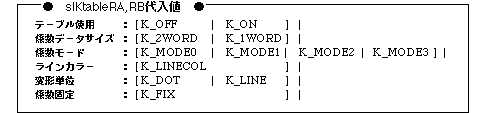

Return to previous page | Return to menu | Go to next page
void
Scroll function
Coefficient table control settings
void slKtableRA(ktable_adr , mode)
void slKtableRB(ktable_adr , mode)
void *ktable_adr;
Uint16 mode;
ktable_adr Coefficient table address in VRAM mode Coefficient table control mode
Set the VRAM address of the coefficient table in the register, and specify how to use the coefficient table and the structure of the coefficient table at the same time.
None
You can specify the following parameters:

Note) When fixed coefficient is specified for the parameter, the coefficient table is assumed to be prepared in advance, and the calculation of the coefficient table in real time is not executed.
Reference: Chapter 8 Scroll
slKtableRA,B